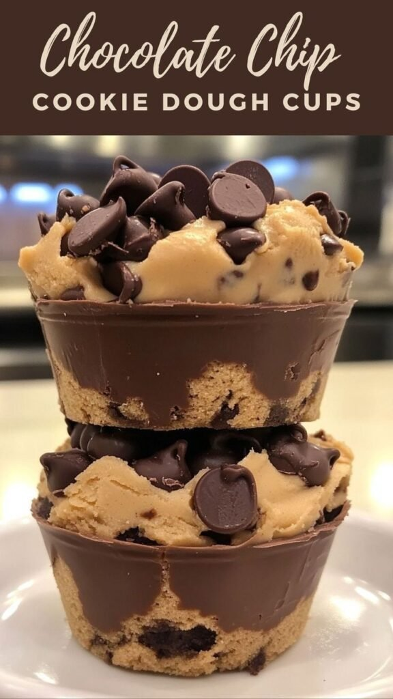
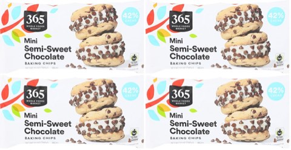

Desserts in a cup solve more party problems than people realize. No awkward slicing, no fighting over the last corner piece, and every guest gets a perfectly portioned helping without anyone hovering around a knife.
The format also looks genuinely impressive with very little styling effort. Clear cups show off the layers, and the layers themselves do most of the visual work on their own.

Choosing the Right Dessert Cup
Matching the dessert to the actual vibe of the event matters more than picking whatever looks best on its own. A bright mango cream fits a summer gathering better than a rich red velvet does, and vice versa for something cozier.
Portion size isn't something to guess at either. A cup that's too small reads as stingy, while one that's too large tends to go half-eaten and wasted.
A creamy base that holds its shape once layered, paired with something crunchy for contrast, is the formula behind nearly every cup on this list. Balancing sweet against a touch of salt, tart, or bitter is what keeps any of these from tasting one-note by the third bite.
17 Desserts in a Cup
1. S'mores
Starting with the fun one. Chocolate, marshmallow, and graham cracker crumbs deliver instant nostalgia in cup form.
It's built for smiles rather than quiet appreciation, a genuinely playful way to open a dessert spread.
Nothing about it feels messy despite the classic campfire association, which makes it an easy crowd-pleaser indoors too.
2. Coffee Mocha
Coffee lovers tend to find these first at any dessert table, without needing much direction.
The slight bitterness of coffee balances out the sweetness beautifully, which makes it a strong choice to serve after dinner specifically.
It reads as indulgent without tipping into excess, and it tends to keep guests lingering a little longer at the table.
3. Mango Cream
Mango brings an instant tropical feeling to a dessert table, regardless of the actual season or occasion.
The natural sweetness and bright color lift the whole spread, reading as light and genuinely refreshing.
It has a way of feeling sunny even at an indoor gathering, which is part of why it stands out among richer options.
4. Chocolate Mint
This flavor combination tends to divide opinions right up until people actually taste it.
Mint adds a freshness that cuts through chocolate's richness, landing as bold but genuinely refreshing rather than overwhelming.
It leaves a clean finish instead of the heavy, sluggish feeling some richer desserts leave behind.
5. Red Velvet
Red velvet cups bring real drama to a dessert table, in the best possible way.
That deep red color draws people in immediately, and paired with cream cheese frosting, it tastes every bit as good as it looks.
It's not unusual to see someone choose this one purely based on appearance before ever tasting it.
6. Key Lime Pie
Key lime cups bring genuine brightness to a dessert table that otherwise leans sweet across the board.
The tart lime filling cuts through richness and refreshes the palate, especially useful after a heavier meal.
For anyone craving dessert that doesn't feel weighed down afterward, this is consistently the answer.
7. Chocolate Covered Strawberry
This dessert looks considerably fancier than it actually is to put together.
Fresh strawberries paired with chocolate mousse or ganache feel refined without requiring any complicated technique.
People consistently assume more effort went into these than actually did, which is really the whole appeal.
8. Caramel Apple Cheesecake
This one feels like fall in dessert form, and it gets requested well outside of autumn too.
Sweet apples, creamy cheesecake, and rich caramel balance each other out, landing as cozy without ever feeling heavy.
It reads as thoughtful and intentional rather than thrown together, even though the actual assembly is genuinely simple.
9. Chocolate Chip Cookie Dough
Edible cookie dough deserves its own spotlight here, no baking required, and genuinely no regrets afterward.
Safe-to-eat cookie dough layered with cream creates instant indulgence, the kind that makes guests skip dinner just to save room for it.
These cups rarely survive long on a dessert table once people realize what's actually in them.


365 by Whole Foods Market Semisweet Mini Chocolate Chips, 12 oz, Pack of 4
Shop on Amazon10. Funfetti Cake
If happiness had a flavor, this would probably be it. Funfetti cups read as celebration before anyone even takes a bite.
Colorful sprinkles shift the whole mood of a dessert table instantly, trading polish for genuine playfulness.
It's nearly impossible not to smile a little at the sight of sprinkles, which makes this an easy pick for a birthday or kids' event.
11. Banana Pudding
Banana pudding cups feel like a warm hug in dessert form, and they tend to remind people of home almost immediately.
Layers of vanilla pudding, banana slices, and cookies build a soft, genuinely creamy texture that's hard not to love.
People don't just eat these, they remember them, which says something about how nostalgic the flavor actually is.
12. Chocolate Peanut Butter
Chocolate and peanut butter rarely disagree with each other, and that holds true in cup form just as much as anywhere else.
The salty peanut butter balances out the rich chocolate almost perfectly, which tends to get an instant reaction on the first bite.
It's hard to find someone who actively dislikes this combination, which makes it a safe, crowd-pleasing choice for almost any gathering.
13. Tiramisu
Tiramisu in a cup skips all the stress of cutting perfect slices while keeping every bit of the actual flavor intact.
The layers stay genuinely intact in cup form, and the coffee flavor only deepens the longer it sits, tiramisu made a day ahead often tastes even better.
Serve it once and it tends to get requested again at the next gathering, assuming it's not served too late for guests who'd rather sleep that night.
14. Lemon Cream
Lemon desserts have a way of waking people up, especially after a heavier meal where something lighter is genuinely welcome.
The citrus cuts through richness and resets the palate in a way few other flavors manage as cleanly.
These cups tend to disappear faster than expected, the freshness makes them an easy follow-up even after a big dinner.
15. Chocolate Mousse
Chocolate mousse cups feel genuinely luxurious even when the recipe itself stays simple.
Texture matters more than anything here, light, airy mousse melts quickly and leaves people wanting another instead of feeling weighed down.
A little shaved chocolate or a few fresh berries on top turns a simple cup into something that reads as considerably more sophisticated.
16. Strawberry Cheesecake
For something that reads as elegant without much actual effort, strawberry cheesecake cups deliver reliably and disappear fast.
The tangy cheesecake layer cuts the sweetness perfectly, and fresh strawberries add color along with genuine freshness.
It manages to feel light and indulgent at the same time, which instantly elevates whatever dessert table it's sitting on.
17. Classic Oreo
Closing things out with the one that practically never fails, at a birthday party, an office gathering, or any last-minute event that needs something foolproof.
Crushed Oreo crumbs bring the crunch, a creamy filling balances out the sweetness, and the layers look genuinely impressive without any real effort.
These don't need to feel fancy to work, they just consistently disappear first, which says most of what needs to be said.
Final Thoughts
None of these require a trip to a specialty bakery or a complicated recipe. The format itself does most of the heavy lifting, layer a few good components into a clear cup, and it reads as considered no matter how simple the actual assembly was.
Pick two or three that fit the occasion rather than trying to serve all seventeen at once. A tight, well-chosen selection beats an overwhelming spread every time.